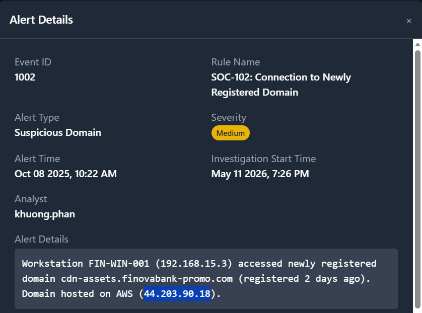
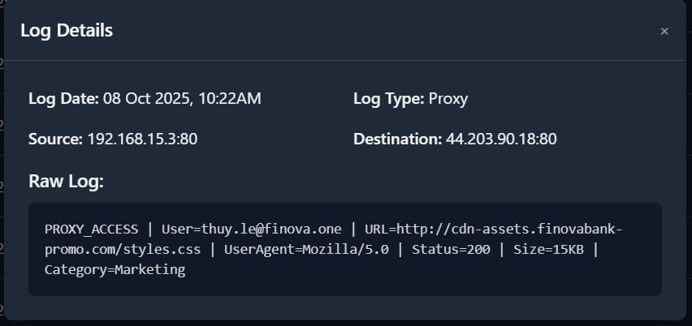
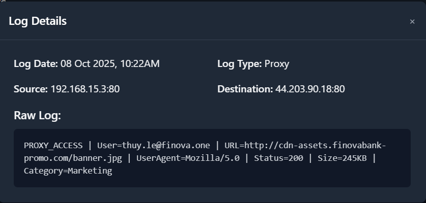
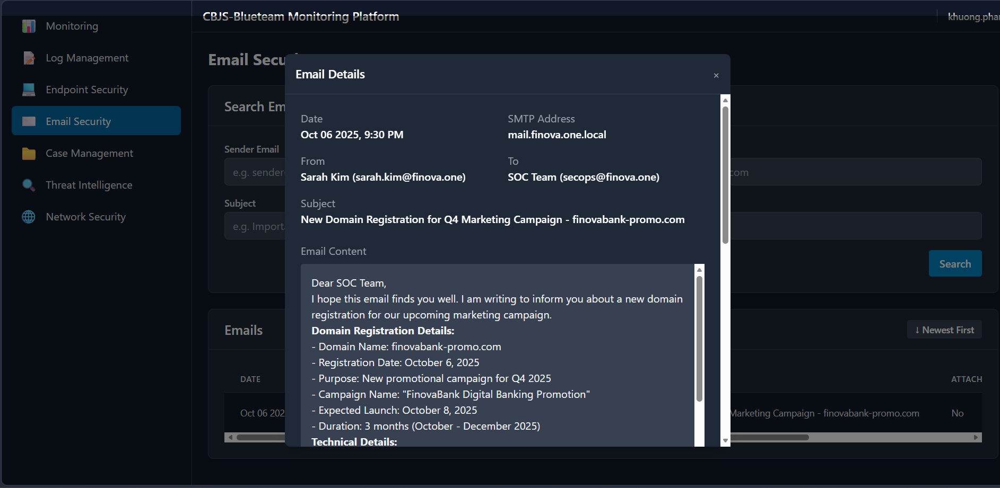

SOC-102: Connection to Newly Registered Domain
SOC nhận alert khi workstation FIN-WIN-001 truy cập domain mới đăng ký cdn-assets.finovabank-promo.com trỏ về AWS IP 44.203.90.18. Quá trình điều tra đối chiếu SIEM alert, proxy log, endpoint context, threat intelligence và email nội bộ để xác định đây là hoạt động Marketing hợp lệ.
Executive Summary
SOC nhận alert SOC-102: Connection to Newly Registered Domain khi workstation FIN-WIN-001 (192.168.15.3) truy cập domain cdn-assets.finovabank-promo.com. Domain mới được đăng ký gần thời điểm alert và host trên AWS với destination IP 44.203.90.18, vì vậy cần được xử lý như một suspicious observable.
Điều tra cho thấy user truy cập bằng trình duyệt Chrome, proxy log chỉ ghi nhận static assets styles.css và banner.jpg, không có executable download, không có process đáng nghi và email nội bộ đã thông báo domain này phục vụ chiến dịch Marketing. Case được phân loại là False Positive · Authorized Marketing Activity.

Alert Context & IOCs
| Field | Value | Analyst note |
|---|---|---|
| Event ID | 1002 | Alert thuộc nhóm suspicious domain access. |
| Source host | FIN-WIN-001 · 192.168.15.3 | Workstation nội bộ thuộc nhóm cần kiểm tra user activity. |
| Destination | cdn-assets.finovabank-promo.com · 44.203.90.18 | Domain mới đăng ký, host trên AWS. |
| Alert time | Oct 08 2025, 10:22 AM | Cần đối chiếu với proxy, endpoint và email evidence. |
| Severity | Medium | Đủ nghi vấn để triage nhưng chưa đủ để kết luận malicious. |
Objective & Scope
- Xác minh workstation có thực sự truy cập domain nghi vấn không.
- Kiểm tra domain/IP có bị đánh dấu malicious hay không.
- Xác định user, process và file/URL đã truy cập.
- Tìm business context để phân biệt phishing với hoạt động hợp lệ.
- Đưa verdict và action để giảm false positive trong tương lai.
Evidence Collected
| Evidence source | Observed evidence | Analyst value | Assessment |
|---|---|---|---|
| Proxy log | User thuy.le@finova.one truy cập /styles.css và /banner.jpg với status 200. | Xác nhận truy cập thật và nội dung là static web assets. | Không thấy executable download. |
| Threat intelligence | IP 44.203.90.18 không bị đánh dấu malicious trong kết quả kiểm tra của case. | Giảm confidence về malicious IOC nhưng không loại trừ hoàn toàn rủi ro. | Suspicious observable, not confirmed malicious. |
| Endpoint context | Process tạo truy cập là chrome.exe, parent process explorer.exe. | Phù hợp với user browsing bình thường. | Không thấy PowerShell/CMD/script đáng nghi. |
| Email security | Email nội bộ thông báo finovabank-promo.com dùng cho Q4 Marketing Campaign. | Cung cấp business justification và khớp ngày launch. | False positive hợp lệ. |



Investigation Workflow
- Đọc alert context: rule name, source host, destination domain, destination IP, severity và timestamp.
- Tra cứu domain/IP trên threat-intelligence sources để xác định có phải known IOC không.
- Pivot sang proxy log để xác định user truy cập URL nào, status code, file extension và dữ liệu trả về.
- Kiểm tra endpoint process để phân biệt user browsing với malware tự động kết nối.
- Tìm business context qua email hoặc owner nội bộ để xác minh domain có thuộc hoạt động hợp lệ không.
- Tổng hợp evidence và phân loại alert.
Final Assessment
False Positive · Authorized Marketing Activity
Reason: Domain mới đăng ký nhưng được email nội bộ xác nhận phục vụ Q4 Marketing Campaign; proxy log chỉ ghi nhận static assets; user truy cập bằng Chrome; không có executable download, process đáng nghi hoặc bằng chứng credential submission.
Recommendations
- Thêm finovabank-promo.com vào approved domain list có owner, purpose và thời hạn rõ ràng.
- Tune rule newly registered domain để loại trừ domain đã được business owner xác minh.
- Thiết lập quy trình Marketing/IT thông báo SOC trước khi đăng ký domain campaign mới.
- Tiếp tục monitor nếu domain phát sinh HTTP POST, file executable download hoặc nhiều host truy cập bất thường.